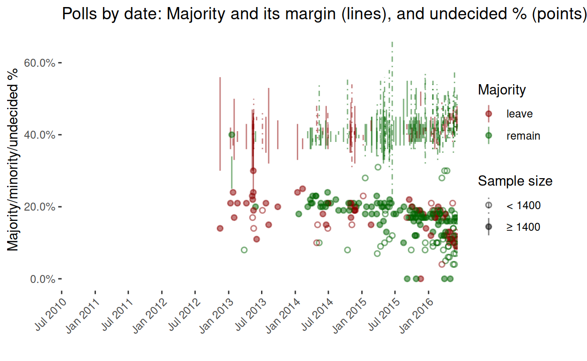
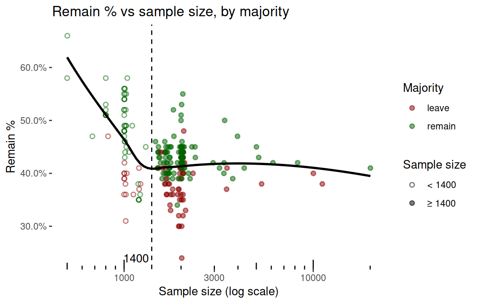
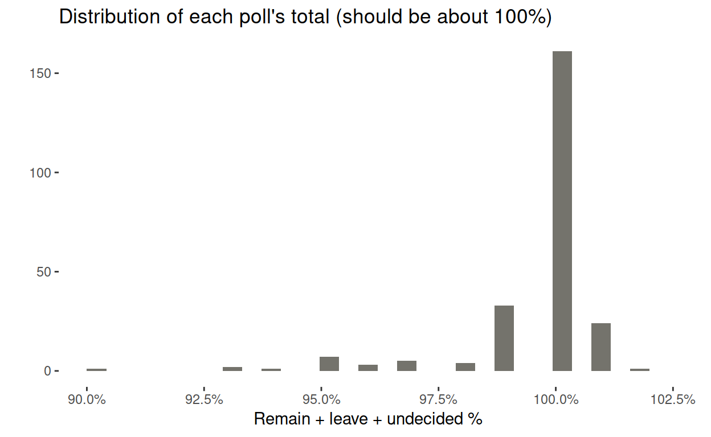
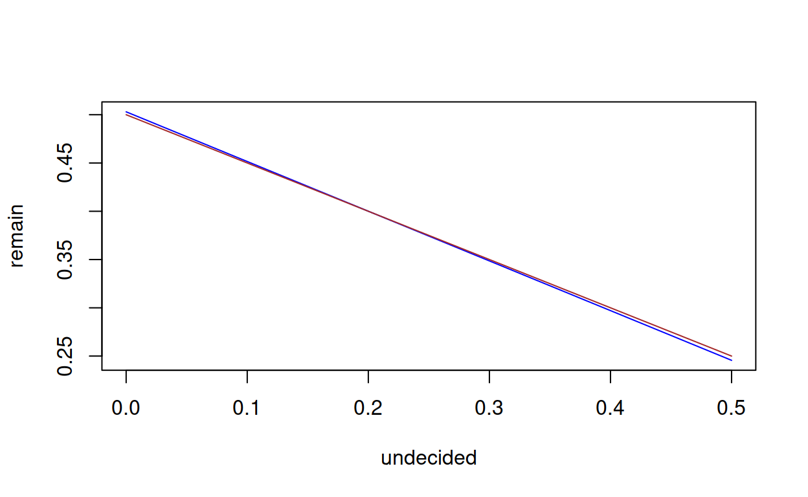
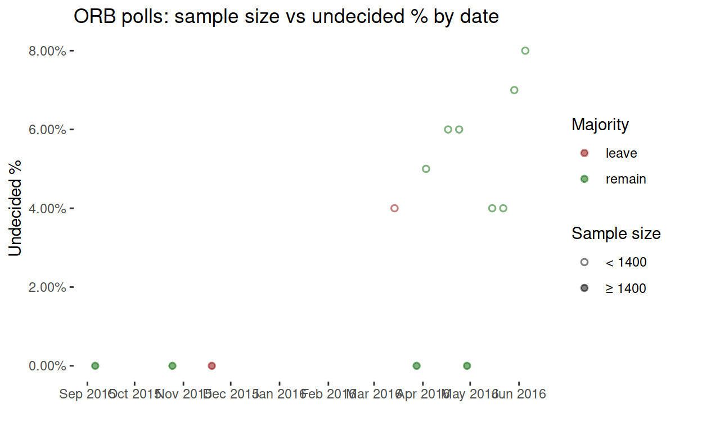

This post does the following:
- Re-works the Financial Times poll-of-polls graph
- Explores the relationship between sample size, polling method, and voting intention.
Data
I scraped the poll data from the Financial Times poll of polls. The Financial Times made this graph of it:

To check a later inference about sample sizes and online/telephone methods, I also scraped polling data from the BBC poll of polls and used it to augment the Financial Times data with the polling method.
My analysis focusses on the Financial Times data, because the sample sizes are provided, there is a longer time-series, and I didn’t notice the BBC’s version until I’d done most of the work.
Reworking the graph
The Financial Times graph emphasises the poll-of-polls statistic, and the difference between online and telephone polls. In my version, I want to emphasise the outcomes (the majority in each poll), the margins of the majorities, and the sample sizes. I also present the full series.

I would have included the poll-of-polls statistic on my graph, since the Financial Times describes their method in a footnote:
The FT poll of polls is calculated by taking the last seven polls from unique pollsters up to a given date, removing the two polls with the highest and lowest shares for ‘remain’, and calculating an adjusted average of the five remaining polls, where the more recent polls are given a higher weight
Unfortunately, besides omitting the weights, and their tie-breaking policy, their statistic has obviously been redesigned since the footnote was written, because their current statistic for ‘remain’ is higher than the second-highest ‘remain’ result in the last seven polls.
Here’s that graph again, but this time beginning in September 2015 like the Financial Times.

Something worth noticing is that the ‘leave’ majorities are mostly large samples. Comparing this graph with the one by the Financial Times, sample size seems to be a proxy for telephone (small) vs online (large) polling methods. Let’s check.
Although the Financial Times graph distinguishes between online/telephone methods, that information isn’t included in the table, despite its obvious importance:
There’s a big difference between the online and telephone polls on the EU referendum – with online polls showing the sides neck-and neck and telephone polls showing about a 15% gap in favour of ‘remain’. Why?
Fortunately, for most polls in the last six months, data from the BBC’s poll of polls can augment the Financial Times data with online/telephone information. As the following frequency table shows, in nearly all matched polls, large samples correspond with an online method. So while large samples appear to favour ‘leave’, it may simply be that online polls do.
##
## online phone <NA> Sum
## < 1400 8 18 35 61
## ≥ 1400 67 0 96 163
## <NA> 10 5 18 33
## Sum 85 23 149 257However, telephone polls do not necessarily favour either side. Comparing the frequencies of outcomes with first methods and then sample sizes, the association between small sample sizes and a ‘remain’ outcome appears to be much stronger than between ‘online’ and ‘remain’ or ‘phone’ and ‘remain’. Perhaps this is why the financial markets apparently regard telephone polls as more reliable, despite the smaller sample sizes.
##
## leave remain <NA> Sum
## online 26 49 10 85
## phone 1 17 5 23
## <NA> 52 97 0 149
## Sum 79 163 15 257
##
## leave remain <NA> Sum
## < 1400 15 46 0 61
## ≥ 1400 57 106 0 163
## <NA> 7 11 15 33
## Sum 79 163 15 257Outcome by sample size / polling method
I already noted that ‘leave’ majorities tend to come from large-sample/online polls. The next graph makes this more obvious.

Justification of large/small threshold
But how did I choose 1400 as the boundary between small and large samples? It’s because of the following visualisations, Polls with samples smaller than 1400 just seem to behave differently. Perhaps small samples don’t find the ‘leave’ voters, or perhaps they do find the ‘remain’ ones.

Smaller samples also don’t find the undecided people (this is not quite as convincing as the graph above).

Checking this against the method data from the BBC, I’m arguably on the right track. It would obviously be best to know the method as well as the sample size, but since I’m using the Financial Times data, and since I don’t have the method of so many of those polls (grey points below), I have focussed on sample size instead.


Indecision favours a ‘leave’ outcome: Part I – graph
Here I can use stats, the only stats I’ve ever been taught (the really out-of-date stuff), to explore whether undecided voters will favour the status quo. (What is my status quo, anyway – that we’re in Europe now, or that I’ve always wanted to leave?)
Here’s the association between indecision and the ‘remain’ vote.

Intermission (obvious glitch)
A few ‘remain’ majorities are below the ‘win’ threshold in the graph above (green points below the dotted line). That could be because of missing “won’t vote” information. See YouGov’s explanation:
Telephone polls ask their respondents “How will you vote in the referendum?” People are assumed to have an opinion, and 90% of them give one. By contrast, online polls present people with options: remain, leave, won’t vote, don’t know – there is less assumption of an opinion, and 20% or more don’t offer one.
A few polls total much less than 100%, probably for the same reason, but it isn’t a problem in most cases.

Indecision favours a ‘leave’ outcome: Part II – stats
We’ve already seen the non-linearity of sample size vs everything, so I build two models, first for large samples, then for small ones.
##
## Call:
## lm(formula = remain ~ undecided, data = master_ft %>% filter(sample_size ==
## "≥ 1400"))
##
## Residuals:
## Min 1Q Median 3Q Max
## -0.130927 -0.016075 0.004517 0.019961 0.099369
##
## Coefficients:
## Estimate Std. Error t value Pr(>|t|)
## (Intercept) 0.503000 0.009442 53.275 <2e-16 ***
## undecided -0.514807 0.052217 -9.859 <2e-16 ***
## ---
## Signif. codes: 0 '***' 0.001 '**' 0.01 '*' 0.05 '.' 0.1 ' ' 1
##
## Residual standard error: 0.03366 on 161 degrees of freedom
## Multiple R-squared: 0.3764, Adjusted R-squared: 0.3726
## F-statistic: 97.2 on 1 and 161 DF, p-value: < 2.2e-16The coefficient of ‘undecided’ is nearly -0.5, suggesting that undecided large-sample voters about as likely to vote either way (lines almost parallel in the graph below). But as proportion of undecided voters reduces, at what point does the ‘remain’ outcome start to benefit? (this analysis will be more meaningful for small samples, in just a moment).
There are two linear functions: the fitted model, and the threshold of a majority (depending on the proportion of voters who are undecided). Not only can we plot these functions (and base R is simplest here), but we can solve them for the fulcrum, which turns out to be about 19%. If the proportion of voters who are undecided is below 19%, then outcome is likely to be ‘remain’.
I exhibit the R code here, for anyone interested in plotting functions and solving them.
remain <- function(x) {coef(lm_large)[2] * x + coef(lm_large)[1]}
majority <- function(x) {(1 - x) / 2}
plot(remain, 0, 0.5, xlab = "undecided", col = "blue")
plot(majority, 0, 0.5, col = "brown", add = TRUE)
fulcrum <- function(x) {remain(x) - majority(x)}
uniroot(fulcrum, interval = c(0, 1))$root
## [1] 0.2026221
master_ft %>% filter(sample_size == "≥ 1400", undecided >= 0.1855785) %>% nrow
## [1] 72Since “small” may be a proxy for “online”, let’s model that, too.
##
## Call:
## lm(formula = remain ~ undecided, data = master_ft %>% filter(sample_size ==
## "< 1400"))
##
## Residuals:
## Min 1Q Median 3Q Max
## -0.147178 -0.028871 0.004515 0.035027 0.178669
##
## Coefficients:
## Estimate Std. Error t value Pr(>|t|)
## (Intercept) 0.57795 0.01514 38.177 < 2e-16 ***
## undecided -0.80511 0.09922 -8.114 3.51e-11 ***
## ---
## Signif. codes: 0 '***' 0.001 '**' 0.01 '*' 0.05 '.' 0.1 ' ' 1
##
## Residual standard error: 0.05248 on 59 degrees of freedom
## Multiple R-squared: 0.5274, Adjusted R-squared: 0.5194
## F-statistic: 65.84 on 1 and 59 DF, p-value: 3.507e-11This time, the coefficient of undecided is about -0.8, suggesting that undecided small-sample voters are more likely to vote to remain. The fulrum, now much more meaningful than above, given the coefficient, is at about 26%, with a caveat that there are only five observations above 26%.
remain <- function(x) {coef(lm_small)[2] * x + coef(lm_small)[1]}
majority <- function(x) {(1 - x) / 2}
plot(remain, 0, 0.5, xlab = "undecided", col = "blue")
plot(majority, 0, 0.5, col = "brown", add = TRUE)
fulcrum <- function(x) {remain(x) - majority(x)}
uniroot(fulcrum, interval = c(0, 1))$root
## [1] 0.2554619
master_ft %>% filter(sample_size == "< 1400", undecided >= 0.255461) %>% nrow
## [1] 5Zero undecided voters
Finally, what about the five zero-undecided polls (the five points along the bottom of the timeseries)? It turns out that those polls were all conducted by the ORB company, and they’re also the large-sample polls by ORB. They aren’t included in the BBC data, so we can’t tell whether or not they are online polls. Make of them what you will.
## # A tibble: 5 x 11
## remain leave undecided date pollster sample sample_size
## <dbl> <dbl> <dbl> <date> <chr> <dbl> <chr>
## 1 0.5 0.5 0 2016-04-29 ORB 2000 ≥ 1400
## 2 0.51 0.49 0 2016-03-28 ORB 2002 ≥ 1400
## 3 0.48 0.52 0 2015-11-19 ORB 2067 ≥ 1400
## 4 0.53 0.47 0 2015-10-25 ORB 2015 ≥ 1400
## 5 0.55 0.45 0 2015-09-06 ORB 2044 ≥ 1400
## # … with 4 more variables: majority <chr>, max_percent <dbl>,
## # min_percent <dbl>, method <chr>